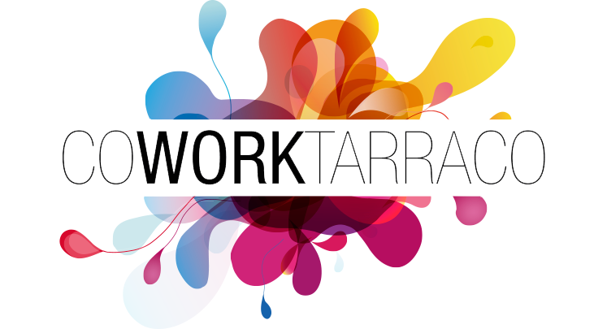
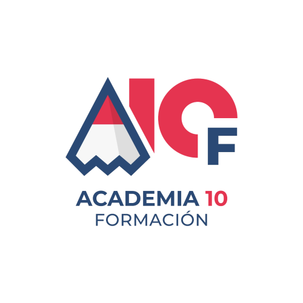
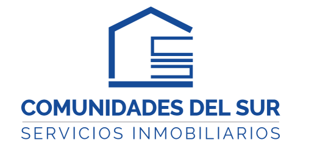
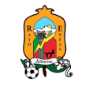
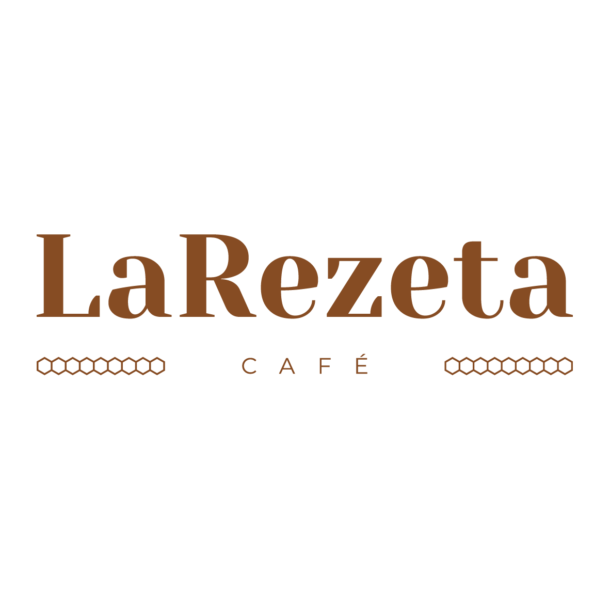
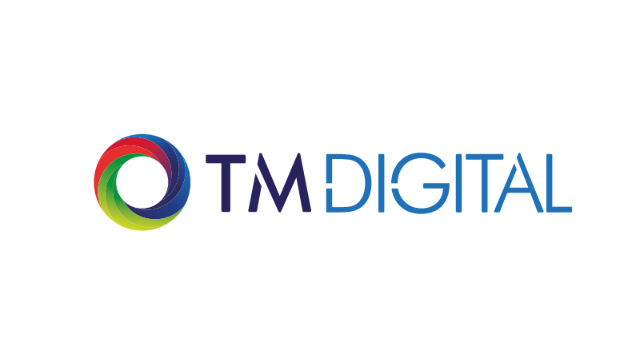

El equipo detrás de SuarezSat
Somos un grupo de 1º de Bachillerato del IES Padre Suárez que ha decidido participar en el desafío CanSat. Combinamos software, diseño, comunicación y patrocinio para construir nuestro CanSat y llevarlo a la competición.
Áreas de trabajo
Software y programación
Desarrollamos la aplicación y la IA que procesa las imágenes y valida la misión secundaria.
Diseño del paracaídas
Trabajamos en el sistema de desacople y recuperación para asegurar un aterrizaje correcto.
Diseño del dron
Integramos el modelo dron para las misiones y la captura de imágenes durante el descenso.
Diseño de la lata
Adaptamos la estructura del CanSat para proteger la electrónica y asegurar la estabilidad.
Hardware y redes
Seleccionamos componentes, coordinamos compras y aseguramos la conectividad del sistema.
Patrocinio y comunicación
Redes sociales, contacto con patrocinadores y coordinación gráfica para dar visibilidad al proyecto.
Nuestro equipo
Conoce al equipo completo que está haciendo posible el proyecto CanSat. Cada miembro aporta su trabajo para alcanzar nuestros objetivos.
Ismael Cuerva
Software y programación (IA)
Alejandro Fernández
Diseño del paracaídas
Leo Fernández
Diseño del dron
Tomás Buitrago
Software y programación
Marwan Makran
Coordinación de componentes y compras
Ignacio Arto
Coordinación gráfica y redacción
Alejandro Sánchez
Hardware y redes
Luis Pinel
Diseño de la lata y búsqueda de patrocinadores
Patrocinadores actuales

COWORKTARRACO
Nuestro primer gran patrocinador fuera de Andalucía

Academia10 Granada
Patrocinador principal actualmente, con una gran aportación.

Caja Rural
Patrocinio destacado y clave que impulsa nuestro proyecto.

Comunidades del Sur
Gran patrocinador que nos ha ayudado en el desarrollo del proyecto.

Rayo Eneas
Equipo de fútbol local que aportó el primer impulso al proyecto.

Erre Que Erre Publicidad
Apoyo en el logotipo y donativo clave para seguir avanzando.

Gastrobar La Rezeta
Colaboración local que nos ayuda a continuar con el proyecto.

TM Digital
Patrocinador de gran apoyo en tecnologías e IA.